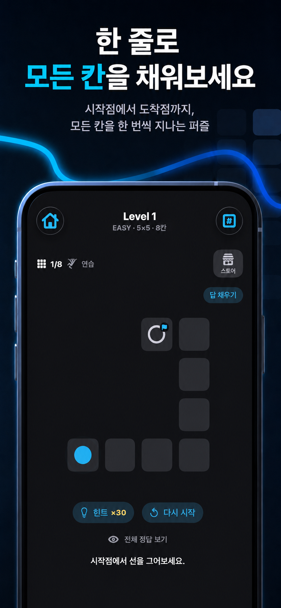
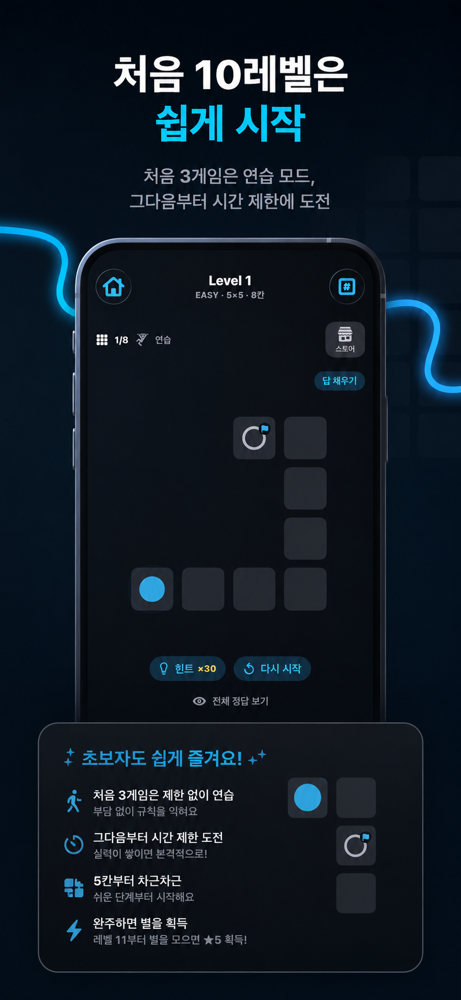
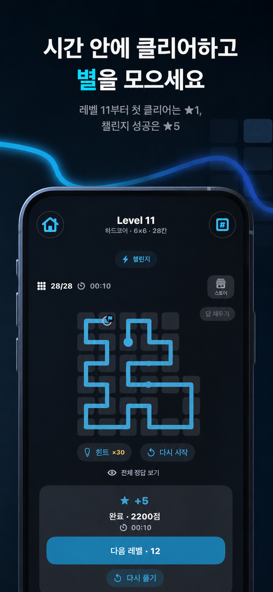
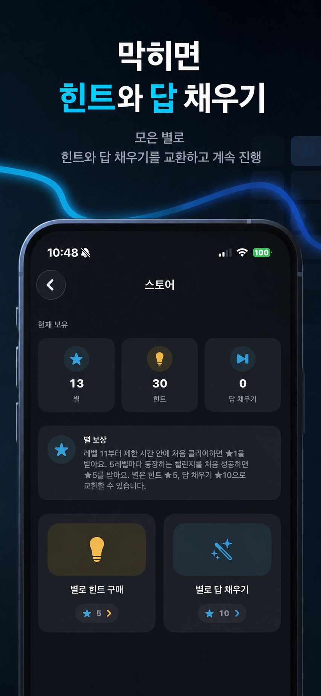
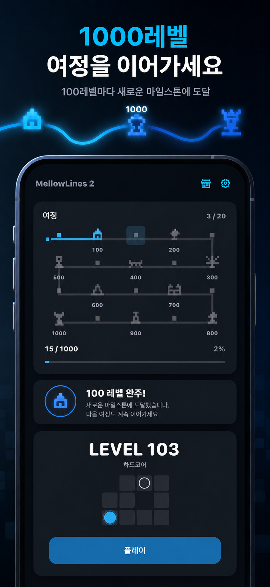
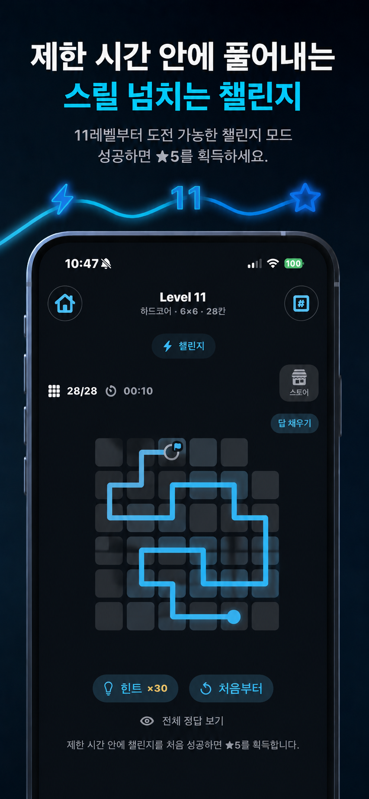
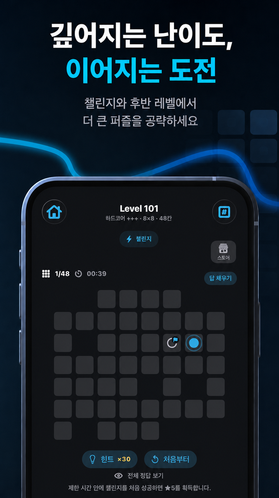

01
1,000 레벨
짧은 보드부터 큰 보드까지 이어지는 긴 여정.
ONE LINE. EVERY CELL.
한 줄로 모든 칸을 채우는
집중형 퍼즐 게임
시작점에서 도착점까지 한 번의 선으로 연결하세요. 처음에는 가볍게 익히고, 뒤로 갈수록 더 큰 보드와 제한 시간, 챌린지, 별 보상이 이어집니다.

CALM TO CHALLENGING
처음 10레벨은 규칙과 조작을 익히는 구간입니다. 이후부터 시간 제한과 보상이 더해지고, 다양한 크기의 퍼즐이 이어집니다.
01
짧은 보드부터 큰 보드까지 이어지는 긴 여정.
02
제한 시간 안에 해결하는 별도 도전 구간.
03
시간 안에 첫 클리어하면 별을 모아 도움 기능으로 교환.
04
잘못 그렸다면 지나온 길을 따라 자연스럽게 되돌아가세요.
INSIDE THE GAME
실제 게임 화면을 기반으로 MellowLines 2의 진행 구조를 확인하세요.






THE 1,000-LEVEL JOURNEY
한 번의 플레이로 끝나는 퍼즐이 아니라, 다음 레벨을 계속 이어가며 자신만의 여정을 쌓는 구조입니다.
PLAY. EARN. KEEP GOING.
레벨 11부터 제한 시간 안에 처음 클리어하면 ★1, 챌린지 첫 성공은 ★5. 모은 별은 힌트와 답 채우기에 사용할 수 있습니다.
MELLOWLINES 2
집중하고 싶을 때 가볍게 시작해 오래 이어갈 수 있는 한 줄 퍼즐.